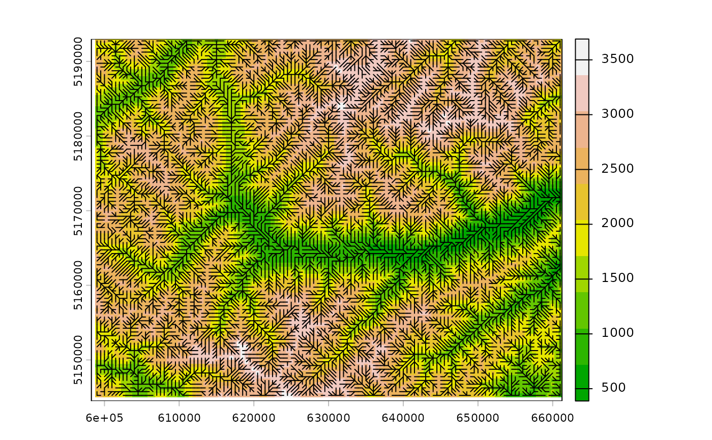

Visualize Directional Arrows on a SpatRaster
arrows_on_rast.RdThis function overlays directional arrows on a plotted SpatRaster object,
typically used to represent vector fields such as wind directions, drainage flow directions, or other angular data.
Usage
arrows_on_rast(x="flowdir",x_base=NULL,unit=c("deg","rad","flowdir"),arrow_length=NA,clockwise=FALSE,
angle_from_h_axis=0,angle_from_x_axis=angle_from_h_axis,length=0,...)Arguments
- x
A
SpatRasterobject representing angles or directions (in degrees or radians or flowdirs).- x_base
Optional. A
SpatRasterobject to use as a basemap if no plot is already present.- unit
Character. Unit of the angle values in
x. Either"degrees"or"radians"or"flowdir". Seeterrainforflowdiroption.- arrow_length
Numeric. Length of the arrows to be plotted.
- clockwise
Logical. Default is
FALSE. IfTRUE, angles measured in radians or degrees are considered clockwise.- angle_from_x_axis
Anti-clockwise angle from x (or horizontal) axis to the reference direction. Default is 0.
- angle_from_h_axis
Anti-clockwise angle from x (or horizontal) axis to the reference direction. Default is 0, e.g., in the case of northing wind direction it is often used
angle_x_axis=90, unit="deg", clockwise=TRUE.- length,...
Additional graphical parameters passed to
arrows.
Examples
f <- system.file("ex/elev_vinschgau.tif", package="terra")
r <- rast(f) #|> aggregate(fact=5,fun=min)
d <- terrain(r, "flowdir")
dl0 <- flowdirD8lad(r,lambda=0)
dl1 <- flowdirD8lad(r,lambda=1)
plot(r,col=terrain.colors(10))
arrows_on_rast(dl0, unit="flowdir",col="blue")
#> NULL
arrows_on_rast(dl1, unit="flowdir",col="red")
#> NULL
arrows_on_rast(d, unit="flowdir",col="black")

#> NULL
###